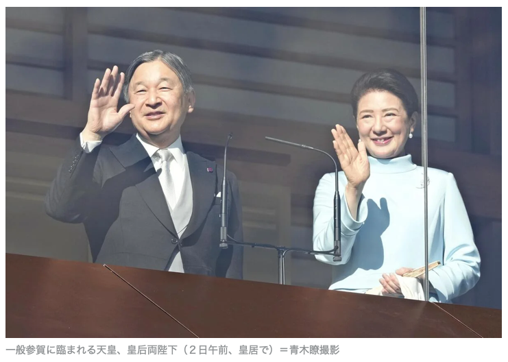
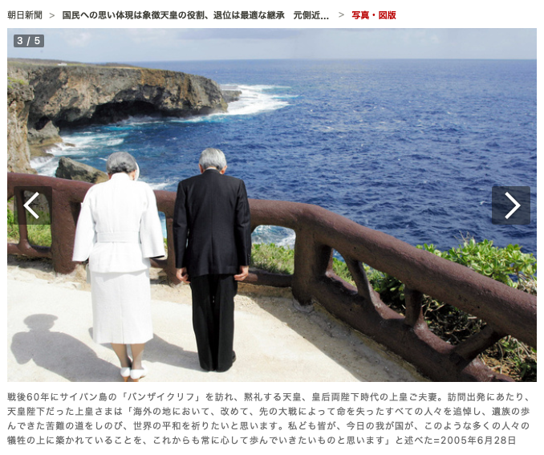
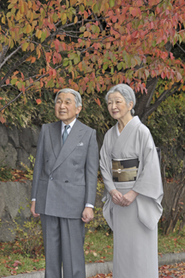
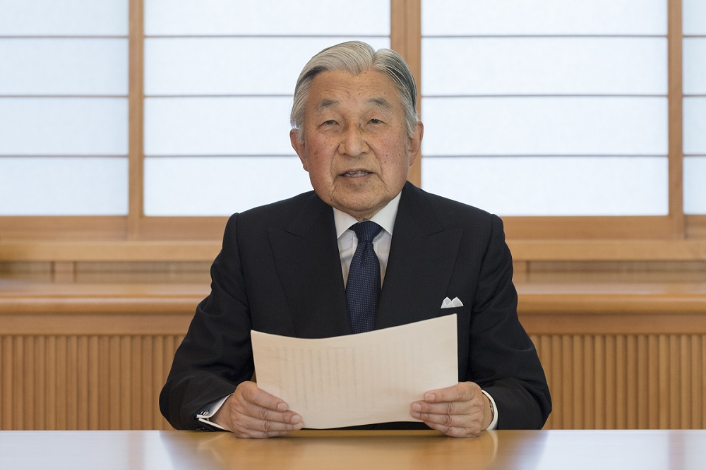
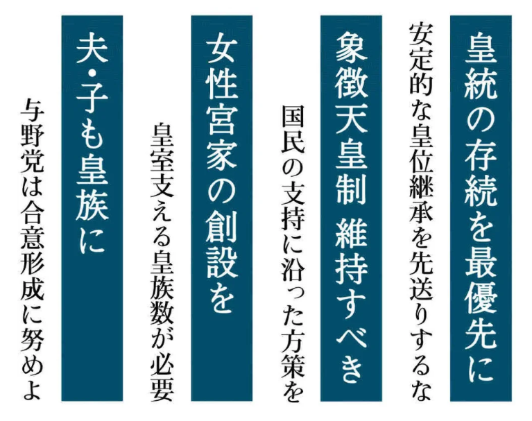
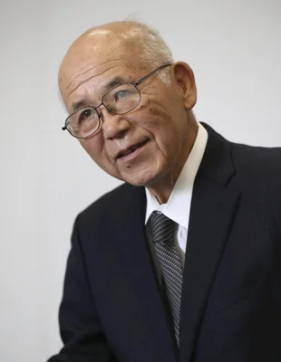

政治学概論Ⅰ《2025》
#3 国民主権と天皇制
![]()
January 7, 2026
KEYWORDS
- 国民主権；社会契約論；象徴天皇；公的行為
連絡事項
- 次回講義のリーディング・アサインメント
- 牧原出「フォーカス政治 | 高市政権、揺らぐ基盤と政策の針路」
Ⅰ. 前回の振り返り（授業の感想）
授業の感想
社会的弱者は誰か、それはなぜか、という問いが生まれない
「社会的弱者は誰なのか、なぜそうなるのか」という問いが生まれない社会では、不平等であるということに気づきにくくなり、自己責任であるという考え方になってしまう。本来、制度や環境によって生じている不平等が問題として認識されず放置されるため、適切な支援や改善が行われない。この問いが生まれること自体が社会をよくするために必要なものであり、重要な基盤となると考える（市場さん）。
失業時所得代替率のサッチャー政権の話
個人的に新自由主義はかなり批判的に見ている。これにより、格差がひらき、希望が持てない社会になっていったと思う。特に日本では、自民党の自由主義的傾向が強く、自己責任論が蔓延し、希望が持てなくなったと考えている。去年の政治学概論の最終課題でも同じようなことを書いたし個人の解釈、見方•考え方によるのかもしれないけど、自分は、この世界的な転換が格差の助長、希望を持てない社会にしたと考えてるので、非常に重要な問題だと考えている（片山さん）。
授業の感想
選挙公約を比較してもほとんど意味がないという主張
選挙に行く際は公約を見るのではなく、過去の実績に着目して投票するように心掛けようと考えた。また、中高の生徒会長を決める時、公約を聞いたうえで投票していたけれど、ほとんど実施されることなく、何のための公約なのかと疑問に感じていたため、納得がいくとともに、政治の世界でも同様であることが印象に残った。さらにこのような学生時代の経験から、人々が選挙の際も公約に目を向けてしまうということもあると思ったので、教育の場から変えていくことが求められるのかなと感じた（兼清さん）。
複数の国家像があるという点が面白いと思った。
中学の社会科の授業で南北問題や南南問題が取り上げられたときに、先進国と後進国を比較して、後進国が先進国のように発展することが重要だと学んだ記憶がある。先進国が発展途上国を援助して産業や経済発展を促すことは必要だが、真似をするのではなく、その国の実態に合った支援が必要だと気づかされた。また、日本が外国で成功した方法をそのまま輸入すると日本では合わない可能性があるという危険性があると感じた（橋本さん）。
授業の感想
日本の経済状況を表す指標などを多様な視点からグラフを通して比較した点
グラフの見せ方や同じ国の経済を表す指標であったとしても、データの算出のしかたや、切り取り方、比較する国によってグラフ化したときに読み手に与える印象が全く異なっていたのが印象的だった。特に、貧富の差が大きいイメージの強いアメリカでは、短期的な失業に関しては保障が行き届いていたり、長期的なものには日本などと比べると保障が足りていないという点に、データの扱い方次第では読み手の印象操作を行うことも容易であると感じ、前回の授業や冒頭でもあった出版社による記事の考え方の傾向があるという平等な視点ではないことがさらに印象づいた（髙坂さん）。
授業の感想
エスピン＝アンデルセンの「国家にはさまざまなパターンがあるため、何らかの基準に照らして進度を評価するのは間違っている」という考えが重要だと思った。
特定のモデルに基づいて発展の優劣を評価するのは誤りであるという点は、これまでの教育を通して自然と理解できることであると思う。しかし、私の感覚では、インターネット上には今もなお、特定の国を基準にして優劣を論じる言説が一定数存在する。このような発想が一般的な議論の中で用いられ続けている現状を、改めて問い直す必要があると感じた（角田さん）。
福祉国家論：定義と変遷
過去の自分を振り返って、政治や福祉について考えるときに、どの程度の不平等は許容されるのかという視点が抜け落ちていたと思う。福祉国家という言葉に対して、その国のあらゆる不平等を是正するためという先入観があったので、前提を見直す機会になったと感じた。また、アメリカモデルの近代化の幻想のように、どのような国家の形であれ、何かしらの基準と照らし合わせて分析することが重要だと感じた（福田さん）。
補足
- 「ボードゲームで考える社会の平等と不平等」（スライド資料）
- 参加者（高校生）は、富豪が富を独占しようとする交渉を、協調して阻止しようとする
- 参加者（高校生）は、社会に現に不平等が存在していることを認識し、それをよくないと考えている
- 参加者（高校生）は、社会の不平等の原因を政治家に求めるが、それがどのような政治家（政党）なのか、不平等を促進する政策が何かを特定できていない。そのため、政治家が一律に悪い、という議論になりがちで、政治家は公舎に住むべきという意見が出ていた（国会議員には議員宿舎がある）
Ⅱ. 今週のイチオシ記事
今週のイチオシ記事
- 朝日新聞「ノーベル賞学者も求めた基礎研究の予算、異例の大幅アップ 文科省」（2026年1月5日）
- 遠藤乾（国際政治学者）「焼け石に水。それを持ち上げるおめでたい記事だなと思う」
- 神田眞人（前財務官）：既得権益、学内の抵抗勢力のために、改革が十分な成果を挙げていない。国民も勉強しない学生を甘やかすべきではない。改革を進める大学に財政を傾斜配分すべき（神田 (2025)）
今週のイチオシ記事
- 朝日新聞「立憲「違い」強調、国民民主は「連携広がる」 高市政権と距離に違い」（2026年1月4日）
- 境家史郎（政治学者）
【視点】次年度予算案への国民民主の支持をすでに取り付けてあるわけだから、高市政権にとって、通常国会前半はすでに乗り切ったも同然である。 他方、埋没を恐れる立憲としては、スパイ防止法や国旗損壊罪新設といった、イデオロギー的対立争点で「見せ場」を作ろうとするだろう。しかしこれこそが罠で、結局、立憲の右派政権への対決姿勢が強調されればされるほど、国民民主は立憲から距離を取るようになる、というところまで展開が読める。「戦後日本政治あるある」である。
Ⅲ. 国民主権
『公共』（東京書籍）
- （単元）公共的な空間における基本的原理：私たちの民主的な社会
- ゼミナール | 近代政治の原理と民主主義
- 近代民主政治：人民主権と国民主権
- 法の支配と立憲主義
- ゼミナール | 日本国憲法の原理①：日本国憲法と3つの原理
明治憲法と現行憲法の相違点
憲法前文は主権が国民にあることを明記しており、大日本憲法で規定されていた天皇主権は否定された。天皇の地位は「主権の存する日本国民の総意に基く」とされ、国政に関する権能を持たず、国事行為のみを行うとされた
- ➡︎ ほとんど何も説明していないに等しい（小学校・中学校の社会の説明と大差ない）
- ゼミナール | 近代政治の原理と民主主義
国民と国民主権
1. 近代国家の要諦：「国民」という概念を作る
- 近代国家
- 海外諸国（特に大国）に対して競争力ある国家を作る
- 国内に複数の主権がある政治体制の改変を求める（主権国家）
- 国内に複数の主権がある国家は弱く、かつ、他国につけ入る隙を与える
- ➡︎ 統一的な法規・ルールを要する
- ➡︎ 国民（nation）というフィクションを要する
国民と国民主権
- 国民という概念
- 多種多様な諸個人から構成される人びとを「国民」の名でまとめ上げる
- 統合の前提：ばらばら；多中心性；複合性
- 政治：ばらばらな諸個人を統合し、それを維持するための技法
- 例：義務教育
- 多種多様な諸個人から構成される人びとを「国民」の名でまとめ上げる
- 例：ブリテン人（British People）の創造
- United Kingdomを作るためのフィクション
- イングランド人、ウェールズ人、スコットランド人、アイルランド人を包含する概念
- 当初、イングランド人はブリテン人という呼称を嫌った
国民と国民主権
後期近代以前の統合技法：王権
- 王権神授説
- 王権が弱い（君主の言うことに素直に従わない勢力の存在を無視できない）からこそ､君主権が神に由来すると説くことで権力を正当化しようとする政治理論
- 例：ジェームズ6世（スコットランド国王）がイングランド国王（ジェームズ1世）をに
- 文芸復興；聖書の英語化など、多様な取り組みを行なう
ジェイムズは､王権の神授的起源を擁護しても､国王が神と同様な神秘的な力を有すると主張することに躊躇していた（小林 (2014, p. 159)）
国民と国民主権：社会契約論と国民主権
ジョン・ロックの社会契約論
自然状態
- 無政府状態
- 個人一人ひとりがすべての権利をもつ
- 正義の解釈権；正義の執行権
- 弱肉強食の世界で生きなければならない
- 個人一人ひとりがすべての権利をもつ
国民と国民主権：社会契約論と国民主権
ジョン・ロックの社会契約論
社会状態
- 弱肉強食の世界では生きられない／生きたくないと考えた者らが、政府を作るという契約を交わす
- 個人：解釈権；執行権を政府に譲渡
- 個人から国民（people; nation）に
- 政府：（その代わり）個人の安全を保証する
- 政府が社会契約に反した場合、国民は政府を解体する権利をもつ
- 個人：解釈権；執行権を政府に譲渡
国民と国民主権：社会契約論と国民主権
ジョン・ロックの社会契約論
社会への影響
- アメリカ合衆国憲法、フランス革命を理論武装する際に用いられた。日本国憲法の社会契約説に沿っている
国民と国民主権：
日本国憲法
⑴ 国民主権
- 国民が、国家の在り方を最終的に決定する最高の力をもつ。選挙権を行使し、議会を構成（組み替える）ことで行使される
⑵ 立憲主義
- 憲法が国家権力を規定し、統制する（国民全般ではなく、公権力を担う者を拘束する）
- 公権力の正当性は何に由来するか
- 公権力にできることは何か、また、できないことは何か
Ⅳ. 象徴天皇制
リーディングアサインメント：原武史ら「座談会 これからの象徴天皇制を考える」
31頁、宮内庁の役割
本文にも記載されていたように、天皇の象徴性、政治的な利用を避けるといった観点から、政府と天皇の中間に位置しているという事ができる宮内庁はとても重要な存在だと思ったから。宮内庁の人事の入れ替わりが激しく、人材の育成が必要であるという事は初耳で、難しい立ち位置にいるからこそ、宮内庁に関する仕組みを見直すことが必要だと思った（今井さん）。
リーディングアサインメント：原武史ら「座談会 これからの象徴天皇制を考える」
・「おことば」による退位の実現と憲法・制度の乖離（24ページ～） ・「平成流」の完成と次代へのハードル（26ページ～） ・皇室の存続と「女性・女系」問題の回避（32ページ～）
平成の歩みが、制度ではなく天皇個人の資質や努力によって支えられてきた危うさが浮き彫りになっているからです。国民に寄り添う「平成流」が象徴の理想像として定着した一方で、それが次代には到底不可能な「個人的な公務量」となり、皇位継承問題も含め制度疲労を起こしている点が非常に興味深いと感じました。個人の献身に依存しすぎる現在の象徴天皇制の限界を鋭く突いています（尾﨑さん）。
リーディングアサインメント：原武史ら「座談会 これからの象徴天皇制を考える」
積み残された課題
皇室が支持される理由に安心感があるというのが記述されていた。現在の皇室では男系が減っており、女系天皇や女性天皇の議論が行われている。そこで女系天皇などの天皇制の問題は、将来的な皇室の正統性からくる安心感に関わる問題であると思うので、外国語が話せるなど時代に合った能力的な点も必要ではあると思うが、旧宮家を含めて皇族の数を増やすことが正統性を維持するという点で必要な議論にもなるのかなと感じた（小松原さん）。
リーディングアサインメント：原武史ら「座談会 これからの象徴天皇制を考える」
国民も政府も「『象徴』という機能は何なのか？」という問いを天皇に丸投げして、「天皇がやってることが『象徴』だよね」としてきた（p26）が重要だと思った。
小・中・高の教育を通して、天皇については「日本国民の象徴」という言葉以上の説明をほとんど受けてこなかった。そのため、私の中の天皇像は、平成天皇が国民と交流する姿から自然と形づくられ、それが妥当かどうかを考えることもなかった。しかし、この文章を読んで、「象徴」とは何かを日本国憲法の解釈として主体的に考え、自分なりの価値観をもつ必要があると感じるようになった（角田さん）。
リーディングアサインメント：原武史ら「座談会 これからの象徴天皇制を考える」
平成天皇が、被災地など零れ落ちそうな場所に足を運び、緩やかな統合を図ってきた（34ページ）
平成天皇が被災地や過疎地など問題や不安を抱えている国民たちのもとへ訪問なさっている場面をよくテレビで見ていたが、今までの天皇ではあまりなかったことなのだと初めて知った。国民の象徴として天皇が存在する中で、国家から距離を置かれてしまっている人々に直接寄り添う行為は象徴を可視化した行為であり、「零れ落ちそうな場所を緩やかに統合する」という言葉はとても興味深いと感じた。同時に、天皇が象徴して統合の手を差し伸べなければならなくなる目に、政治で十分に対応するべきなのではないか、従来の対応では不十分なのではと感じた（長谷川さん）。
リーディングアサインメント：原武史ら「座談会 これからの象徴天皇制を考える」
ｐ34の下の方「いい意味と悪い意味があり、私たち自身がその両面があることを認識しなければなりません」
私は、天皇が「国民統合の象徴」として分断された社会の修復に寄与するのは、日本国の象徴の立場として素晴らしい取り組みなのではないかと思っていた。しかしその反面、政治の不作為を覆い隠してしまう可能性であったり、政治本来の役割を奪い取ってしまったりといった可能性があることを知り、これまでそのようなことは考えもしなかったので、面白いと思ったから（引地さん）。
原武史ら「座談会 これからの象徴天皇制を考える」要点
⑴ 日本国と国民統合の象徴としての天皇
〔河西〕でもご本人は、「象徴天皇」である自分が、意思を発するのは当然だ」と考え、あのような表明になったのだと思います｡この「おことば」には、自分がやってきた仕事に対する自負心を強く感じました｡そうした「おことば」の意図がどこまで国民に理解されているかは分かりませんけれど｡
〔原〕国民がこれだけ圧倒的に支持をしているのは、万世一系イデオロギーを奉しているからではなく、とりわけ3.11以降、被災地を訪れる天皇と皇后の姿がしばしば報道されるなど、露出度が上がったからです。
原武史ら「座談会 これからの象徴天皇制を考える」要点
⑴ 日本国と国民統合の象徴としての天皇
〔河西〕 今の平成の皇室のあり方は、分断された社会の中で、相対的に下のほうの層に、積極的に触れてきました。被災地や過疎化した島々、沖縄を訪問することもある意味では、そうだと思います。分断した社会だからこそ、天皇は能動的に動かざるを得なかったのです。そうしないと、共同体としての日本は崩壊する可能性すらあると天皇は考えたのかもしれません。そして、日本という共同体からこぼれ落ちそうな場所に足を運び、「国民統合の象徴」として緩やかな統合を図ろうとしてきた。しかしこれは、政治の不作為を覆い隠してしまう可能性もあります。天皇が行くことでなんとなく不満が解消されてしまう。政治への不満を表出するエネルギーが減退してしまういい意味と悪い意味があり、私たち自身がその両面があることを認識しなければなりません。
原武史ら「座談会 これからの象徴天皇制を考える」要点
⑵ 国民の無理解、無関心
〔原〕「陛下も80歳を過ぎてお年だから、そろそろやめてもいいのでは」とか、「天皇の終身在位は非人間的な制度であるから退位する自由を認めなければ」などの声が国民から上がっていたかというと、ほとんどなかったと思います｡〔略〕ところが、「おことば」の後、あっという間に風向きが変わり、9割が支持するという流れになった｡
原武史ら「座談会 これからの象徴天皇制を考える」要点
⑶ 象徴としての天皇の後継問題
〔河西〕今回の退位は、「疲れたからやめたい」ではなくて、むしろ「自分の仕事を全て引き継がせたい」という思いが強くあると思うんですよね｡
〔佐藤〕河西先生がおっしゃるように、「象徴のあり方の模索を、これからも続けてほしい」というメッセージを感じました｡そのことはしかし、国民も政府も「『象徴』という機能は何なのか？」という問い天皇に丸投げして、「天皇がやっていることが『象徴』だようね」としてきたことの反映でもあると思います｡
〔河西〕昭和は「いればいい」、威厳があって、そこにいてくださって──というのでよかった｡だけど平成の場合は、それだと国民から無関心のまま終わってしまうため、積極的に能動的に動いていった｡〔略〕次の代は無理だなと感じます｡
原武史「明仁上皇が作り上げた「平成の天皇像」は令和に引き継がれるか」
ある人は「天皇の第二の人間宣言だ」と言い、ある人は「現政権への不満を明らかにするものだ」と言い、著名な憲法学者ですら、天皇の「やむにやまれぬ希望の表明」であると評価した。また一般の国民は概して、高齢の天皇への労りや敬意、感謝の気持ちを抱くにとどまった印象があります。
はっきり言って、こうした反応に私は失望しました。「おことば」が発せられた背景にある権力構造も、読み解くべき内容についても、まったく深い洞察が行われず、「天皇とは何か」「象徴とは何か」という議論も起こらなかった。
なぜ、大きな権力の発露であった「おことば」が、平成の日本で無抵抗に受け入れられたのか。なぜ私たちは、天皇から「ボールが投げられた」にもかかわらず、その中身を主権者として吟味することもなかったのか。
原武史「明仁上皇が作り上げた「平成の天皇像」は令和に引き継がれるか」
そのような「象徴」の定義が望ましいものか否か、また、現代日本において憲法で禁じられているはずの天皇の権力性をどう評価すべきかについては、主権者である我々国民がもっと広く深く、少なくとも明仁上皇と同じくらいしっかりと考えぬくべきでしょう。
おそらく令和の時代に、明仁上皇と美智子上皇后は、この「象徴としての務め」を徳仁天皇と雅子皇后に引き継いでほしいと考えているはずです。しかし徳仁天皇と雅子皇后が、その意思や適性を持っているかどうかは未知数です。新しい時代には、また新しい「象徴」のあり方が模索されることになると思います。
令和の天皇の人となり
- 出典：読売新聞「新年一般参賀で天皇陛下「穏やかで良い年となるよう願っております」…初出席の悠仁さま、にこやかに手を振られる」（2026年1月2日）
令和の天皇の人となり：オックスフォード大学留学
そもそも私は、幼少の頃から交通の媒介となる「道」についてたいへん興味があった。ことに、外に出たくともままならない私の立場では、たとえ赤坂御用地の中を歩くにしても、道を通ることにより、今までまったく知らない世界に旅立つことができたわけである。私にとって、道はいわば未知の世界と自分とを結びつける貴重な役割を担っていたといえよう（徳仁親王 (2023, pp. 149–150)）
- 歴史家としての訓練（オックスフォード大学留学）
- 18世紀テムズ川水運の実態の解明
- 河川改修、航行に携わった人々と石炭とモルトなどの農産物に着目
- 多くの一次史料を駆使
- 18世紀テムズ川水運の実態の解明
令和の天皇の人となり：全国戦没者追悼式
- 宮内庁「主な式典における天皇陛下のおことば」
- 「全国戦没者追悼式」（令和元年8月15日（木）（日本武道館））
戦後の長きにわたる平和な歳月に思いを致しつつ，ここに過去を顧み，深い反省の上に立って，再び戦争の惨禍が繰り返されぬことを切に願い，戦陣に散り戦禍に倒れた人々に対し，全国民と共に，心から追悼の意を表し，世界の平和と我が国の一層の発展を祈ります。
令和の天皇の人となり：全国戦没者追悼式
Looking back on the long period of post-war peace, reflecting on our past and bearing in mind the feelings of deep remorse, I earnestly hope that the ravages of war will never again be repeated. Together with all of our people, I now pay my heartfelt tribute to all those who lost their lives in the war, both on the battlefields and elsewhere, and pray for world peace and for the continuing development of our country.
- remorse: （悪事·不行跡などに対する）深い後悔，悔恨; 良心のとがめ，自責の念 / the feeling of being extremely sorry for something wrong or bad that you have done
宮内庁：井上亮『宮内庁長官：象徴天皇の盾として』
- 井上亮（元日本経済新聞記者）『宮内庁長官：象徴天皇の盾として』
- 「富田メモ」をスクープ1
- オクとオモテ
- オク：侍従職（じじゅうしょく）
- 家政機関。日々、天皇と接する
- オモテ：宮内庁（官僚機構）
- 行幸啓や報道対応
- 天皇の意向を尊重したいが、天皇の行為が「内閣の助言と承認」を要すること、また、宮内庁が行政府の一組織であることで苦しむ
- オク：侍従職（じじゅうしょく）
宮内庁：（戦後）昭和時代の課題
（戦後）昭和時代の課題
- 天皇の戦争責任の回避（としての盾）
- 戦争責任に言及したい昭和天皇と、それを阻止したい宮内庁長官の攻防
- 昭和天皇は、自分には責任がない、仕方がない、というニュアンスの発言をしがち
- 天皇の戦争責任を認めると、昭和天皇の天皇としての地位に直結する（退位問題）
- 各種あいさつにおける文面、文言を政権との間で調整
- 戦争責任に言及したい昭和天皇と、それを阻止したい宮内庁長官の攻防
宮内庁：平成時代の課題
平成時代の課題
- 「日本国と日本国民の象徴」たる天皇とは何か
- 平成の天皇の意向を支持し、サポート
- 例）慰霊の旅；他国への謝罪（戦争責任）＊戦争を体験した政治家が活躍していた時代は、天皇と政権の意向に大きな違いなし
- 天皇の政治的価値を利用しようとする政権との攻防
- 例）内々の規定（1ヶ月ルール）に反する外国要人（習近平国家副主席）との会見；オリンピック誘致活動への参加；「主権回復の日」式典への出席
- 平成の天皇の意向を支持し、サポート
宮内庁：平成時代の課題 > 「主権回復の日」式典
JNN（via Youtube）
2013年4月28日にやはり政府主催で開かれた「主権回復・国際社会復帰を記念する式典」においても、今上天皇と皇后が退出するさい、参列者の一部が「天皇陛下万歳」と叫び、安倍晋三首相をはじめとするほかの参列者がつられて万歳した
御指摘の唱和は、本式典の次第にはなく、本式典の終了後に行われたものであり、政府としてお尋ねの心境に関するお答えは差し控えたい。また、本式典には内閣総理大臣を始め十八名の閣僚が参列したが、そのうち本式典終了後に行われた御指摘の唱和をした人数については、政府として把握していない（4.28「主権回復の日」政府式典の挙行結果と今後の開催に関する質問に対し、別紙答弁書）
象徴天皇制と日本国憲法
国事行為と公的行為
- 国事行為：憲法に記載
- 公的行為：憲法に記載なし（教科書『公共』にも記載なし）
- 国会の開会式でのお言葉；外国公式訪問
- 宮中祭祀､行幸啓
- 全国規模の式典や行事への出席
- 被災地のお見舞い
- 慰霊の旅（平成の天皇）
象徴天皇制と日本国憲法
日本国憲法
第1条 天皇は、日本国の象徴であり日本国民統合の象徴であつて、この地位は、主権の存する日本国民の総意に基く
The Emperor shall be the symbol of the State and of the unity of the people, deriving his position from the will of the people with whom resides sovereign power.
象徴天皇制と日本国憲法
日本国憲法
第4条 天皇は、この憲法の定める国事に関する行為のみを行ひ、国政に関する権能を有しない
The Emperor shall perform only such acts in matters of state as are provided for in this Constitution and he shall not have powers related to government.
- 国事行為：首相と最高裁長官の任命、国会の召集、衆議院の解散などを列挙（第7条）
象徴天皇制と日本国憲法
日本国憲法
第3条 天皇の国事に関するすべての行為には、内閣の助言と承認を必要とし、内閣が、その責任を負ふ
The advice and approval of the Cabinet shall be required for all acts of the Emperor in matters of state, and the Cabinet shall be responsible therefor.
- ➡︎ 「象徴」天皇の要件について何も記載していない
象徴天皇制と日本国憲法
- 国民的議論も国会での議論不在
- 宮内庁も考えてこなかった（昭和天皇の戦争責任問題の方が重要だった）
- 「桃季物言わざども下自ら軽蹊を成す」（初代宮内庁長官・田島道治）
- 憲法の規定は天皇が象徴としての役割をもつことを積極的に論じる者ではなく、むしろ、象徴以外の役割を持たないことを定めたもの（憲法学者・芦部信喜）
- ➡︎ 平成の天皇のみが天皇の「象徴性」について考えてきた
昭和天皇の象徴天皇論
- 1901年（明治34年）生まれ
- 在位：1926年12月25日 - 1989年1月7日
象徴性
- 生前、公的に天皇の象徴性について発言していないが、私的な記録あり（田島道治『拝謁記』）
- 天皇は「国民の道徳的模範として国民を教育する」ための存在 (井上 (2025, pp. 62–64)）
- 田島はこの部屋以外でそのようはことを話してはならないと諌める
- 天皇は文化、学問芸術、社会事業を通して国民と接触を図る (井上 (2025, p. 65)）
- 天皇は「国民の道徳的模範として国民を教育する」ための存在 (井上 (2025, pp. 62–64)）
平成の天皇の象徴天皇論
- 1933年（昭和8年）生まれ
- 在位：1989年1月7日 - 2019年4月30日
象徴性
- 「国民とともに」あり、国民と苦楽を共にすることに「国民の統合」としての象徴性を見出す
- 被災地のお見舞い；「慰霊の旅」（戦地慰霊）；戦後処理（謝罪）
平成の天皇の象徴天皇論
被災地のお見舞い
 - 出典：朝日新聞「 天皇訪中は「戦後のけじめ」 日中の極秘交渉、外交記録が明かす曲折」（2023年12月21日）。
- 出典：朝日新聞「 天皇訪中は「戦後のけじめ」 日中の極秘交渉、外交記録が明かす曲折」（2023年12月21日）。
平成の天皇の象徴天皇論
国内、海外を問わず、天皇の旅は受け身が原則だが、慰霊の旅は明仁天皇の強い思いによる能動的なものだった。「戦災地は全国各地にあるのに不公平にならないか」「訪問が政治的意味合いがあると受けとられないか」という声もあったが、藤森長官は「陛下のお気持ちを実現したい」として、調整に乗り出した（井上 (2025, p. 52)）。
平成の天皇の象徴天皇論 > 「バンザイクリフ」
カンテレNEWS
- 崖から子供と身を投げた母親の姿も”バンザイクリフ” 「サイパン戦」の記憶を当時5歳の女性が語る「戦争だけはやってくれるな」 女性の”姉の孫”ディレクターが取材(via Youtube)
80年前、大阪や神戸への空襲が激化した背景には、「サイパン島の陥落」が関係していることを知っていますか？日本本土へ飛行機でおよそ3時間と近く、アメリカ軍にとっては攻撃の拠点にしたい島で、日本にとっては「国防の要」とされました。そのため激しい爆撃などで多くの民間人も犠牲になりました。両親と多くのきょうだいを失った沖縄出身の87歳の女性は「戦争したらみんな木っ端みじん。戦争だけはやってくれるな」と呼びかけます。女性の姉の孫である、関西テレビのディレクターが取材しました。
平成の天皇の象徴天皇論
- 出典：朝日新聞「 天皇訪中は「戦後のけじめ」 日中の極秘交渉、外交記録が明かす曲折」（2023年12月21日）。
平成の天皇の象徴天皇論
陛下は図書館から資料を借りてきたり、関係者に話を聞いたりして事前に勉強された。そして直接関係者に話を聞くことを重視されていた。陛下がまず考えるのは、戦争で苦しんだ人々の気持ちだった。そこで人々がどのように苦しんだか。兵士や一般市民の手記、日記などもよく読んでおられた。昭和天皇の内大臣だった木戸幸一の日記を読んでおられ、『あの部分をどう思う？』と聞かれて、あたふたしたこともある」サイパンで明化天皇と美智子皇后は多くの日本人市民が身を投げたスーサイドクリフ、〔54〕バンザイクリフで黙礼した。このときの映像は国民の脳裏に深く焼きつき、戦争の歴史に向き合う平成の天皇、皇后の象徴的姿として記憶された（井上 (2025, pp. 53–54)）。
平成の天皇の象徴天皇論
- 戦後、天皇が初めて訪中した際に、「我が国が中国国民に対し多大な苦難を与えた不幸な一時期がありました」と晩餐会であいさつ
平成の宮内庁長官は天皇の戦争への思いについての発信をコントロールするのではなく、導かれる立場になっていた（井上 (2025, p. 55)）
本来は政治がおこなうべきことだったが、天皇が先頭に立って和解に努めた感があった（井上 (2025, p. 58)）
平成の天皇の象徴天皇論
即位10年に際しての記者会見
天皇の務めには日本国憲法によって定められた国事行為のほかに、天皇の象徴という立場から見て、公的に関わることがふさわしいと考えられる象徴的な行為という務めがあると考えられます（宮内庁「天皇陛下お誕生日に際し（平成24年））

平成の天皇の象徴天皇論
「象徴としてのお務めについての天皇陛下のおことば」（ビデオ）
平成の天皇の象徴天皇論
「象徴としてのお務めについての天皇陛下のおことば」
私が天皇の位についてから，ほぼ28年，この間私は，我が国における多くの喜びの時，また悲しみの時を，人々と共に過ごして来ました。私はこれまで天皇の務めとして，何よりもまず国民の安寧と幸せを祈ることを大切に考えて来ましたが，同時に事にあたっては，時として人々の傍らに立ち，その声に耳を傾け，思いに寄り添うことも大切なことと考えて来ました。
天皇が象徴であると共に，国民統合の象徴としての役割を果たすためには，天皇が国民に，天皇という象徴の立場への理解を求めると共に，天皇もまた，自らのありように深く心し，国民に対する理解を深め，常に国民と共にある自覚を自らの内に育てる必要を感じて来ました。こうした意味において，日本の各地，とりわけ遠隔の地や島々への旅も，私は天皇の象徴的行為として，大切なものと感じて来ました。
平成の天皇の象徴天皇論
「象徴としてのお務めについての天皇陛下のおことば」
皇太子の時代も含め，これまで私が皇后と共に行おこなって来たほぼ全国に及ぶ旅は，国内のどこにおいても，その地域を愛し，その共同体を地道に支える市井しせいの人々のあることを私に認識させ，私がこの認識をもって，天皇として大切な，国民を思い，国民のために祈るという務めを，人々への深い信頼と敬愛をもってなし得たことは，幸せなことでした｡（「象徴としてのお務めについての天皇陛下のおことば）
平成の天皇の象徴天皇論
退位礼正殿の儀の天皇陛下のおことば（平成31年4月30日）
こんにちをもち，天皇としての務めを終えることになりました。ただ今，国民を代表して，安倍内閣総理大臣の述べられた言葉に，深く謝意を表します。即位から30年，これまでの天皇としての務めを，国民への深い信頼と敬愛をもって行い得たことは，幸せなことでした。象徴としての私を受け入れ，支えてくれた国民に，心から感謝します。明日あすから始まる新しい令和の時代が，平和で実り多くあることを，皇后と共に心から願い，ここに我が国と世界の人々の安寧と幸せを祈ります（宮内庁「退位礼正殿の儀の天皇陛下のおことば」
平成の天皇の象徴天皇論： 譲位の意向への反応
譲位の意向への反応
- 「摂政」を置くことを提案
- 平成の天皇の反応：「飾りでいいというのか」と怒りの感情を示す
平成の天皇の象徴天皇論： 譲位の意向への反応
美智子皇后は当初「摂政を置いて、象徴性を増大させていくのがいいのではないか」という考えで、参与らと同じく退位に反対だった。しかし、「摂政はダメだ」という天皇の強い思いを聞くにしたがって、その考えを支持するようになった。参与らは「地位におられることでも象徴としての役割を果たしている。このままでも象徴天皇として傷がつくことはない」という趣旨の話をした。天皇は「わかってくれていない」と落胆し、「飾りでいいというのか」と怒りの感情も見せたという。「存在するだけでいい」という天皇像は、活動して国民に尽くす平成の象徴天皇像に反するものだった。羽毛田は「よかれと思って申し上げたことだった。『陛下のなさってきたことを否定するものではございません』とも申し上げたが、かなりお怒りの様子だった。みずからの生き方、人生を否定されたように思われたのだろう」と回顧する（井上 (2025, p. 197)）。
平成の天皇の象徴天皇論：有識者会議
天皇の公務の負担軽減等に関する有識者会議
- 安倍首相の私的諮問機関として設置。2016年（平成28年）10月17日から2017年（平成29年）4月21日まで14回にわたって会議が開かれる
- 主題：譲位（退位）を認めるかどうか、摂政を置くかどうか
- 付随的に、天皇の各種行為（平成の天皇がいう「天皇の象徴」に関わる行為を含む）、天皇のあり方そのものについても論じられる
- 構成員
- 今井敬（日本経済団体連合会名誉会長）；小幡純子（上智大学大学院法学研究科教授）；清家篤（慶應義塾長（経済学））；御厨貴（東京大学名誉教授（政治学)）；宮崎緑（千葉商科大学国際教養学部長）；山内昌之（東京大学名誉教授（国際関係史））
- 最終報告を答申（2017年4月21日、pdf）
平成の天皇の象徴天皇論：有識者会議
ヒアリング調査：第3回会議から第5回会議
- 「祈り」派 vs. 「象徴」派という対立構図1
「祈り」派
- 伝統に則し、天皇は国民のために祈っていれば十分
- 日本国憲法の諸規定に留意せず
「象徴」派
- 天皇の能動的な行為によって、天皇と国民は一体感をもつ
- 日本国憲法が、天皇の地位を「象徴天皇」と位置付け、国民の総意に基づく存在であることを重視
平成の天皇の象徴天皇論：有識者会議 > 「祈り」派
平川祐弘（比較文化史）
天皇家は続くことと祈るという聖なる役割に意味があるので、それ以上のいろいろな世俗のことを天皇の義務としての役割とお考えになられるのはいかがなものか」。古川隆久（日本近現代史）「今回の「おことば」が一種の先例のようになってしまうと、そこには能力主義の要素が入ってきてしまって血筋ということと少し違う要素が入ってくると思います。
渡部昇一（英語学者・評論家）
本当は、そうなさる〔〔慰霊の旅を指す〕必要はなかったのだということを脇にいる方が申し上げてしかるべきだったと思います。それは、天皇のお仕事というのは、昔から第一のお仕事は国のため、国民のためにお祈りされることであります。……国民のため、国家のため、お祈りさえしてくださればそれは天皇の一番の中心のお仕事であると私は考えていますし、日本の歴史はそれ以外ありません
平成の天皇の象徴天皇論：有識者会議 > 「祈り」派
櫻井よしこ（ジャーナリスト）
国事行為に加えて、多くの機会に地方への行幸啓をお願いし、過重な御公務となっています。この御負担を軽減するために、祭祀、次に国事行為、そのほかの御公務にそれぞれ優先順位を付けて、天皇様でなければ果たせないお役割を明確にし、そのほかのことは皇太子様や秋篠宮様に分担していただくような仕組みの構築が大事だと考えます。……天皇様は何をなさらずともいてくださるだけで有り難い存在であるということを強調したいと思います。
平成の天皇の象徴天皇論：有識者会議 > 「象徴」派
大石眞（憲法学者）
天皇の御存在そのものが尊いのであるから、たとえ公務ができなくなっても、皇位にとどまられるべきである」という見解には、率直なところ、果たして、そう言い切れるのだろうかという思いが湧きます。
園部逸夫（行政法学者・元最高裁判所判事）
天皇は、その存在自体が象徴であって、特段御活動なさらなくても象徴であるという意見がございますが、そのような考え方があることは承知しておりますけれども、さまざまな象徴論があってしかるべきであると思います。私としては、さまざまな象徴像や象徴観に対応できるような仕組みがあることが望ましいと考えており、そうした仕組みの一つとして譲位の導入も望ましいと考えているところであります。
平成の天皇の象徴天皇論：有識者会議 > 連携機関
保阪正康（歴史家・ノンフィクション作家）
法的、政治的に決まっている国事行為の確認と、さらに天皇独自に行う公的な行為の中のその行為については、私たち自身がある意味の、本当はそういうのは天皇自身の主体的な主観的な意見を発言する場と、客観的に歴史的に照らし合わせをする客観化した組織、今もそれに似たような組織はあるのでしょうけれども、もっと力を持った、そういった組織をつくることによって、国民と天皇との間の回路や了解事項をつくっていく必要があるというように思います。
石原信雄（元内閣官房副長官（事務担当））
私は、陛下自身の御意思を確認することが大事だと思うのです。なお、内閣は時の政治情勢によって変わるわけですから、第三者機関的な皇室会議のようなところで陛下の御意思を確認していただくことが必要ではないかと思います。
平成の天皇の象徴天皇論：有識者会議
平成の天皇の反応
- 天皇はお祭りだけしていればいいという意見が出たことに落胆
このころ山本〔信一郎・宮内庁長官〕は「両陛下は新聞、テレビをよくご覧になっているので、有識者会議の結果には落胆されているところもあると思う。有識者会議のヒアリングで『天皇はお祭り（祭祀）だけしておけばよい』といった意見が出たのは残念。あんな意見が両陛下の耳に入っているということを考えるだけでつらい」と漏らしていた。
天皇が保守派の意見にショックを受けたのは事実で、山本ら宮内庁側は天皇の意を受けて、人を介して有識者会議のメンバーに会議の方向性を問いただした。一代限りだが退位容認の方針は決まっているとの回答を得て、天皇は安心したという（井上 (2025, p. 211)）。
皇室の継承問題
- 主題：女性天皇・女系天皇の容認を巡ってなされる
- 天皇の象徴的地位に絡めて論じられることはない
- 憲法を遵守するだけでは「国民統合の象徴」にはなれないという、平成の天皇の問題提起に対して、どう応答するのか
- 天皇の地位は「国民の総意」にもとづく
皇室の継承問題：メディア
メディア
女性天皇・女系天皇容認
男系天皇維持
皇室の継承問題：メディア > 読売新聞
皇統の安定 現実策を…皇族減 典範改正が急務［読売新聞社提言］
象徴天皇制は戦後、国民に定着し、太平洋戦争の戦地を訪れて慰霊したり、災害現場で被災者に寄り添ったりする皇室の活動は深く敬愛されている。皇室典範は、天皇の地位は「男系の男子である皇族」が継承すると定めているが、男系男子にこだわった結果、皇室を危うくさせてはならない（提言)、2025年5月15日）。

皇室の継承問題：メディア > 読売新聞
この議論を集約していく上で重要なのは、国民が望む象徴天皇制とは何なのかという視点だと思う。男系か女系で二分される論点も民意に沿って集約されるのが自然だ。これからも象徴天皇と共に歩んでいく民主主義国家として、国会の責任ある議論で、多数の支持に応えられる方策を実現していただきたい（提言、2025年5月19日）。

皇室の継承問題：メディア > 産経新聞
風を読む 論説委員長・榊原智 | 「日本の皇統」断絶を招く女系論
もし、女性皇族（内親王、女王）が、男系男子ではない男性と結婚し、生まれた子供が即位すれば、それは日本の皇統断絶を意味する。正統性を少しも帯びない、語義矛盾の「天皇」ができる。国家としての日本のレコードも途切れる。
日本がもし、皇位継承の最重要原則を捨て女系継承も容認すれば「雑系」継承になる。それは大陸の易姓革命に等しく、歴代天皇にも皇統を守ってきたご先祖にも申し訳が立たないことになる（オピニオン、2025年12月27日）。
皇室の継承問題：メディア > 世界日報
森田清策 | 皇統と「女系天皇」読売提言に保守派反発【論壇時評】
わが国が世界に誇る皇位は、今上陛下まで126にわたり継承され、皇紀2685年の時を刻んできた。その間、父方に天皇の血を引く女性天皇は８人いたが、母方に天皇の血を引く女系天皇は一人も存在しない。この二つは混同されやすいが、男系の女性天皇はあり得る一方、女性天皇の子でも父方に天皇の血を引かないから天皇になれないということだ。つまり、日本国民に慕われる皇室が今日存在するのは、男系継承という皇統の原則を守ってきたことが皇室の権威につながっていると考えていい。
歴史上、一人も存在しない女系天皇が一度誕生したその先、皇室に何が起きるかは、誰も予想できないし、責任を持てない。伝統を守ることに知恵を絞る重要性はここにある（論壇時評、2025年5月23日）。
皇室の継承問題：メディア > 高市政権のポジション
高市早苗首相は先の党総裁選で、「次の二つ以上に大切なことはない」と言及。一つは憲法改正で、もう一つは「長い皇統を男系で引き継いでいけるようにすること」との考えを表明した。男系維持へのこだわりは、高市氏の首相就任も踏まえ、自民内ではさらに強まっているとされている。保守的な政治的立ち位置の小林氏を責任者に据えたこともその一環とみられる（朝日新聞「 皇位継承、遠い「立法府の総意」 女性皇族の配偶者と子、皇族とするか」、2026年1月8日）
Ⅶ. 次回の授業と宿題
次回の授業と宿題
次回
- 国民主権と天皇制
- 2026年1月7日（水）の配信を予定
宿題
- 授業の感想：
- 回答先： Google Form
- 締め切り：2026年1月5日（月）23時59分
- リーディング・アサインメント：
- 回答先：Google Form
- 締め切り：2026年1月5日（月）23時59分